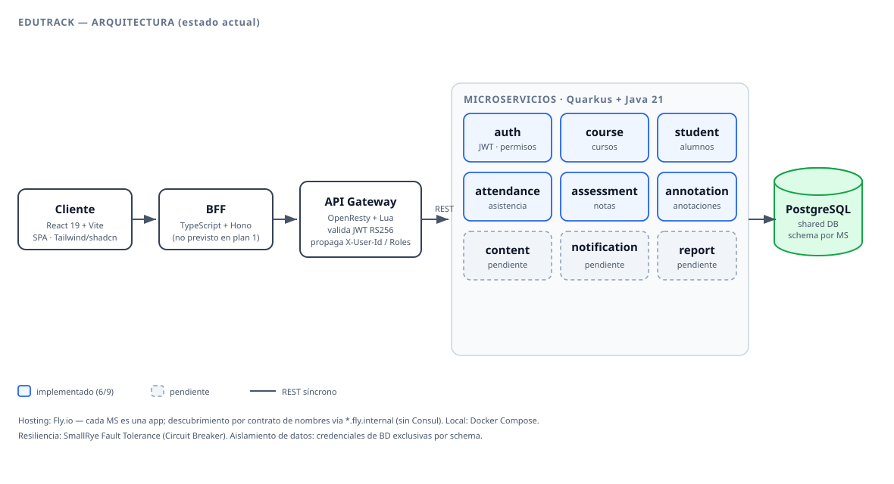
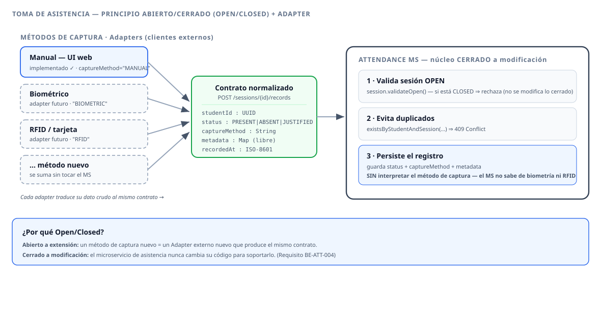

Colegio Bernardo O'Higgins · Coquimbo
DSY1106 · Desarrollo Fullstack III | Evaluación Parcial N°1
Integrantes: {{ COMPLETAR NOMBRES }} · {{ FECHA }}
01 · Contexto y objetivos
Entorno seguro para docentes, administradores y apoderados.
02 · Lo que planteamos vs. dónde estamos
| Tema | Planteamos (entrega 1) | Dónde estamos hoy |
|---|---|---|
| Orquestación | Kubernetes / Amazon EKS + HPA | Fly.io — cada MS es una app independiente |
| Service discovery | Consul + DNS de K8s | Eliminado: contrato de nombres vía *.fly.internal |
| API Gateway | Gateway genérico | OpenResty + Lua (jwt.lua, upstream.lua) |
| Base de datos | Amazon RDS | PostgreSQL — mismo patrón: shared DB + schema por MS |
| Permisos | flags por (role, resource_uuid) | refinado a resource_key string estable <svc>.<recurso> |
| Capa extra | — | BFF (TypeScript + Hono), no previsto |
| S3 · Notif · Reportes · Contenido · Observabilidad | en el diseño | aún no implementados |
El patrón de datos (Shared DB + schemas) y el modelo de permisos se mantuvieron; cambió la nube y el descubrimiento de servicios.
02 · Estado actual
auth course student attendance assessment annotation
+ Gateway (OpenResty), BFF (Hono) y frontend (React 19).
content notification report
Servicios satélite: contenido/S3, notificaciones y reportes.
Lectura honesta: el núcleo de seguridad y dominio académico está construido y probado; faltan los servicios satélite.
03 · Stack final e infraestructura
X-User-Id/Roles*.fly.internal · local: Docker Compose→ Diagrama de arquitectura en la siguiente vista (flecha abajo ↓)
03 · Diagrama de arquitectura

04 · Caso destacado · patrón de diseño
El contrato de asistencia es agnóstico al método de captura — registrar asistencia desde la web hoy, o desde biometría/RFID mañana, sin reescribir el servicio.
El patrón en una frase (Open/Closed Principle):
Diagrama del flujo en la siguiente vista ↓
04 · Flujo de la toma de asistencia

04 · Por detrás — el contrato no interpreta el método
public class CreateRecordRequest {
@NotNull public UUID studentId;
@NotNull public String status; // PRESENT | ABSENT | JUSTIFIED
public String captureMethod; // "MANUAL", "BIOMETRIC", "RFID"...
public Map<String,Object> metadata; // mapa libre, se almacena sin interpretar
@NotNull public LocalDateTime recordedAt;
}
AttendanceSession session = sessionService.getOpenSession(sessionId); // exige OPEN
if (recordRepository.existsByStudentAndSession(studentId, sessionId)) // evita duplicado
throw new ConflictException(...);
AttendanceRecord record = AttendanceRecord.create(
session, studentId, status, captureMethod, metadata, recordedAt);
recordRepository.persist(record); // captureMethod/metadata: guardados, no interpretados
04 · Patrones de diseño en juego
| Patrón / principio | Cómo aparece aquí |
|---|---|
| Open/Closed Principle (SOLID) | nuevo método de captura sin modificar el microservicio |
| Adapter | cada origen (biometría, RFID…) traduce su dato crudo al contrato normalizado |
| DTO + Mapper | CreateRecordRequest → dominio → RecordResponse (capas desacopladas) |
| Guarda de estado (State) | una sesión CLOSED rechaza nuevos registros (validateOpen()) |
| Repository | acceso a datos detrás de AttendanceRecordRepository (Panache) |
Refuerza el requisito BE-ATT-004: el adapter biométrico/RFID es un módulo cliente externo; el MS no tiene dependencia alguna del mecanismo de captura.
05 · Testing unitario
api/: cliente HTTP, errores, query-stringhooks/: login, estudiantes, asistencia, notas, roleslib/: sesión, cookies, utilsResultados con datos reales en la siguiente vista ↓
05 · Resultados (datos reales)
206 tests 0 fallos · 0 errores
26 archivos de test · reporte: front/coverage/index.html
Fuente: */target/surefire-reports/*.txt (./mvnw test) y pnpm test:coverage. Evidencia cruda en assets/evidencia/.
06 · Demo en vivo
docker compose up → abrir el frontendPáginas: dashboard · estudiantes · calificaciones · asistencia · anotaciones.
Cierre